Maple House English · Episode 01 · Review 2026-11-13
Two lists. One family.
A complete storyboard sequence.
Twelve selected sheets cover the market mix-up, the journey home and the family meal. Read each sheet in order: top left, top right, bottom left, bottom right.
Static review only. These images show selected moments, sometimes during an action. They are not approved animation first frames. Creator approval is pending; actual video, audio and motion tests remain deferred to Task 5.
Static composition study · v02
BOARD 01 S01–S04

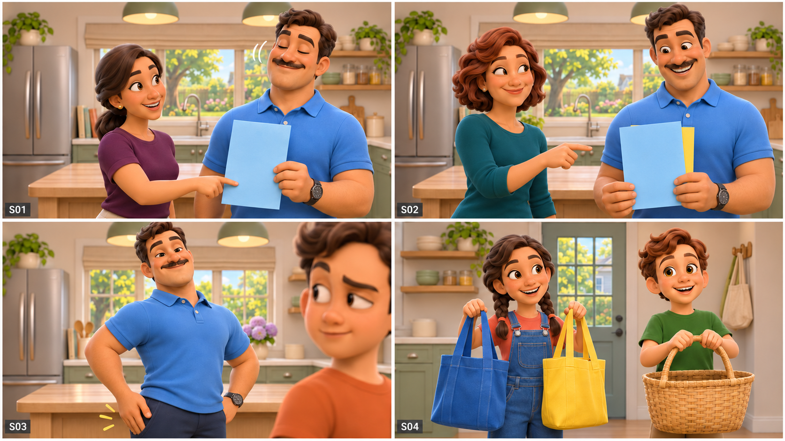
Replaced the baked-in opening banner and list lettering. Blue stays in front of yellow until the reveal. Source script controls the title overlay.
Read the four shot requirements
S01 · Two wives, two dishes
Maya hands Dan the BLUE salad list. She points to its carrot drawing; Dan gives a confident nod. A small title appears as an editorial overlay during the opening two seconds, without extending the clip.
MAYA: Dan, please buy four carrots, three tomatoes, and one cucumber. The blue list is for my salad.
Required ending: Dan holds blue list in left hand; Maya releases it.
S02 · Two wives, two dishes
Nina gives Dan the YELLOW soup list. He places it behind the blue one. Her smile anticipates the joke.
NINA: And six potatoes, two onions, and some broccoli for my soup. Two lists, Dan. Please keep them separate.
Required ending: Blue and yellow sheets overlap in Dan's hands; no vegetables purchased.
S03 · Dad's excellent memory
Dan folds both notes together and puts them in his RIGHT trouser pocket. He pats the pocket proudly. Leo raises one eyebrow.
DAN: Blue soup, yellow salad. Easy! LEO: Dad, that is already backward. Maybe your pocket needs a better filing system.
Required ending: Folded notes in right pocket; Dan has reversed their purpose in his memory.
S04 · Dad's excellent memory
Ella picks up two empty reusable totes, BLUE and YELLOW. Max takes a roomy empty woven market basket and holds it properly by the handle.
ELLA: We can help. I will check the vegetables. MAX: And I will carry the basket. Does broccoli need a seat belt?
Required ending: Ella carries both empty totes; Max carries empty basket; family ready to leave.
Static composition study · v01
BOARD 02 S05–S08

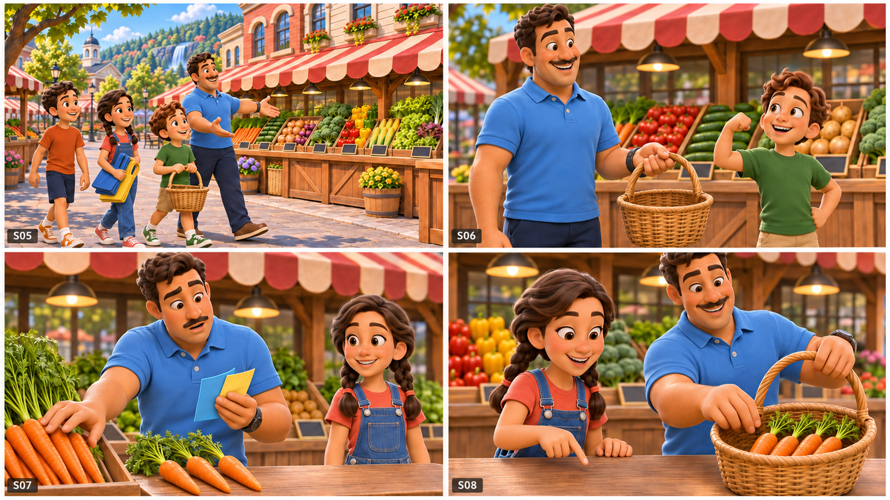
Original study retained. S07 depicts carrot selection in progress; the basket must reach four carrots by S08. Stock in crates is not a purchase.
Read the four shot requirements
S05 · Welcome to the market
Dan and the children enter a sunny neighborhood vegetable market. Ella carries folded totes; Max carries the empty basket. Dan opens his arms at the colorful stalls. Narration is Dan's off-screen voice; mouths need not move.
DAN: Welcome to the market, team. We need vegetables, not surprises. Stay together, and let's check every item.
Required ending: Family stops at front vegetable stall; travel direction remains left to right.
S06 · Welcome to the market
Max offers the basket to Dan, then flexes an imaginary strong arm. Dan accepts the handle without yanking; both smile.
MAX: Can you carry the basket, Dad? It is very heavy. DAN: But it is empty! MAX: I am practicing for later.
Required ending: Empty basket transferred to Dan's left hand; Max has empty hands.
S07 · Four, not forty
Dan opens both folded notes as one stack and misreads the number. He starts reaching toward a large bunch, then stops. No vegetables are wasted or thrown.
DAN: Forty carrots, please. ELLA: Four, Dad. Four carrots. DAN: Good catch. Forty would need their own shopping cart.
Required ending: Dan selects four loose carrots; no forty-carrot purchase occurs.
S08 · Four, not forty
Ella counts four distinct carrots on the clean counter. Dan lowers them into the basket after her final number. Count must be checked manually.
ELLA: One, two, three, four. Four carrots. DAN: Exactly. I was just checking whether you were paying attention.
Required ending: Basket contains exactly four carrots; notes folded back into right pocket.
Static composition study · v02
BOARD 03 S09–S12

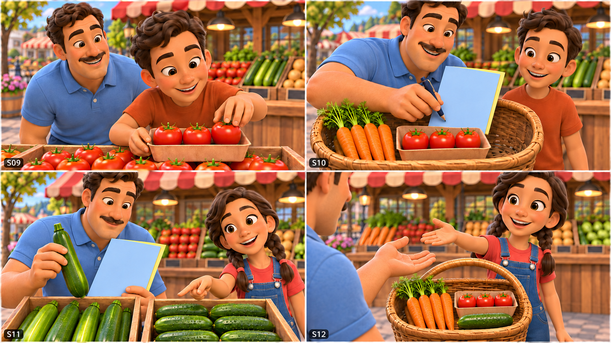
Removed early list separation and clips. S10/S11 show an overlapping stack, blue in front; papers are pocketed in S12. Exact selected quantities remain governed by the ledger.
Read the four shot requirements
S09 · Tomatoes are not bowling balls
Leo chooses three ripe red tomatoes and sets them in a shallow paper tray so they cannot roll. Dan watches the arrangement like a bowling setup.
LEO: We need three tomatoes. These are red and ripe. DAN: Three little bowling balls? LEO: Only if you want tomato soup everywhere.
Required ending: Three tomatoes in paper tray ready to add; none dropped.
S10 · Tomatoes are not bowling balls
Dan gently adds the protected tomato tray beside the carrots and draws a tiny check mark on the correct list. Written text is an editorial overlay, not generated lettering.
DAN: One tomato, three tomatoes. I have the words and the numbers. LEO: Great. Now keep the tomatoes round, please.
Required ending: Basket: four carrots plus three protected tomatoes; both lists still overlapped.
S11 · Two long green vegetables
Dan holds a zucchini above its own crate and studies the cucumber picture on the blue list. Ella points without grabbing it.
DAN: A cucumber! Long, green, and ready for salad. ELLA: That is a zucchini, Dad. The cucumber is in the next crate.
Required ending: Zucchini still over its crate, not in basket; cucumber identified next door.
S12 · Two long green vegetables
Dan returns the zucchini carefully. Ella shows a dark-green bumpy cucumber, then gives it to him. He adds it to the basket.
ELLA: This is a cucumber. That is a zucchini. DAN: Two green cousins. I should have checked their names first.
Required ending: Zucchini returned; one cucumber added; basket also has four carrots and three tomatoes.
Static composition study · v02
BOARD 04 S13–S16

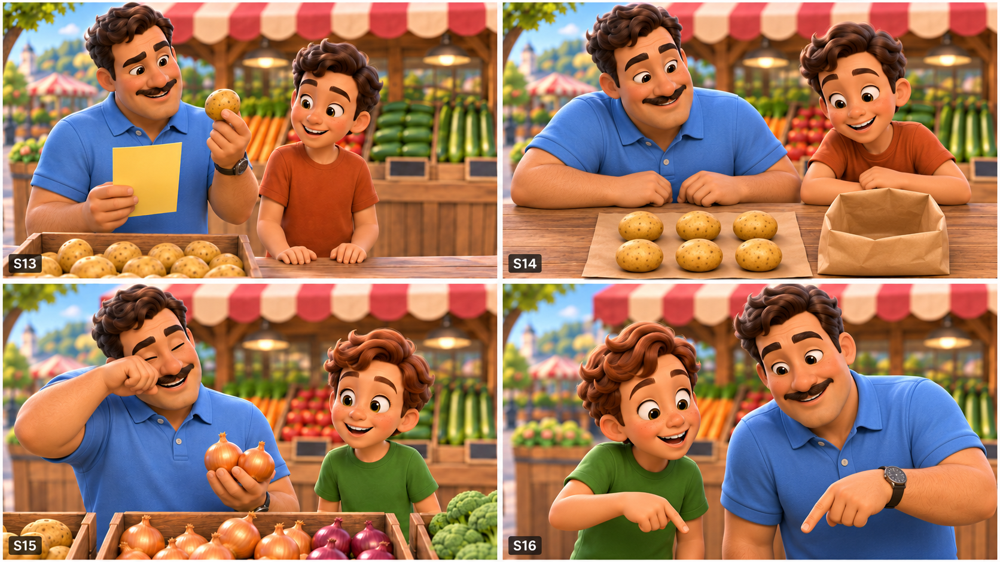
S14 is a six-potato count insert before bagging; it is not the ending basket state. S15 shows intact onions. The full basket is kept outside the crop to avoid false counts.
Read the four shot requirements
S13 · A very crunchy salad
Dan reads the yellow list while calling it the salad list. He examines a potato with a puzzled smile. Leo looks at the list, then the potato.
DAN: Six potatoes for the salad. That sounds very crunchy. LEO: Maybe we should check which list belongs to which dish.
Required ending: Dan holds one potato above bin; no potato has been eaten.
S14 · A very crunchy salad
Leo counts six potatoes into a plain small paper sack; Dan nods and places the sack below the tomato tray in the basket. Heavy produce stays under fragile produce.
LEO: How many potatoes do we need? Six. DAN: Six potatoes. I can count them. I just cannot decide where they are going.
Required ending: Six potatoes in sack at basket bottom; earlier produce retained undamaged.
S15 · The onions win
A harmless breeze makes Dan blink as he holds two intact onions. He theatrically dabs one eye with his clean sleeve; Max studies the uncut onions.
DAN: These onions are making me cry already. MAX: You have not cut them, Dad. Maybe they heard your potato-salad plan.
Required ending: Dan and Max smile; onions remain intact; no claim that touching onions causes tears.
S16 · The onions win
Max points to the two onions. Dan places them gently beside the potato sack and brushes his sleeve down. The breeze subsides.
MAX: One onion, two onions. Which bag do they need? DAN: An excellent question. Let us keep the evidence together for now.
Required ending: Two onions added to basket; neither blue nor yellow tote filled yet.
Static composition study · v01
BOARD 05 S17–S20

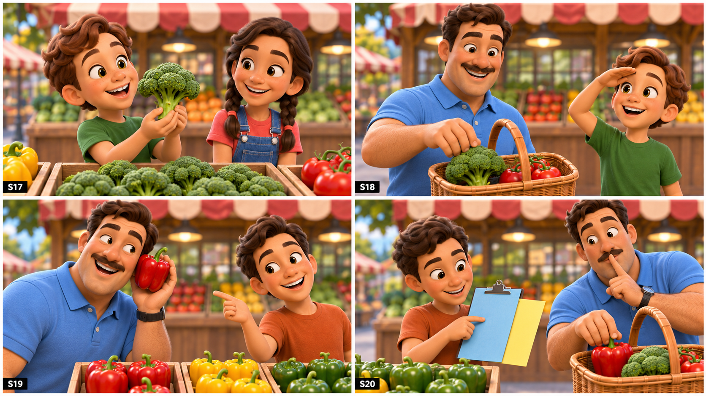
Original study retained for the broccoli and pepper jokes. Visible paper support/clipboard is a study simplification: use loose overlapping blue/yellow papers in production, with no clips before S32. Inventory is partly occluded.
Read the four shot requirements
S17 · A tiny forest
Max admires a broccoli head, holding it over its own crate. Ella smiles at his tiny-tree comparison without breaking the vegetables apart.
MAX: Look! A tiny tree. Can we plant a forest in the basket? ELLA: It is broccoli, Max. A very tasty-looking forest.
Required ending: One broccoli head selected; no pieces detached.
S18 · A tiny forest
Dan accepts the broccoli from Max and places it into the basket. Max salutes the little forest. Keep the tomatoes protected.
DAN: We need some broccoli for Nina's soup. MAX: Then the forest is going swimming. DAN: Finally, one vegetable knows its destination.
Required ending: One broccoli head added; Dan briefly remembers correct soup purpose but lists still overlap.
S19 · The silent bell
Dan holds a red bell pepper near, but not against, his ear. He listens theatrically. Leo points to its shape; no shaking or damaging produce.
DAN: A bell pepper. I cannot hear the bell. LEO: It is named for its shape, Dad. It does not ring.
Required ending: One red pepper selected; no other peppers removed.
S20 · The silent bell
Leo traces the red pepper drawing on Maya's list. Dan places the single red pepper into the basket, then pretends to silence an imaginary alarm.
LEO: Maya wants one red bell pepper, not a green one. DAN: Red pepper, silent bell. I am learning so much today.
Required ending: One red pepper added; green peppers remain unpurchased.
Static composition study · v03
BOARD 06 S21–S24

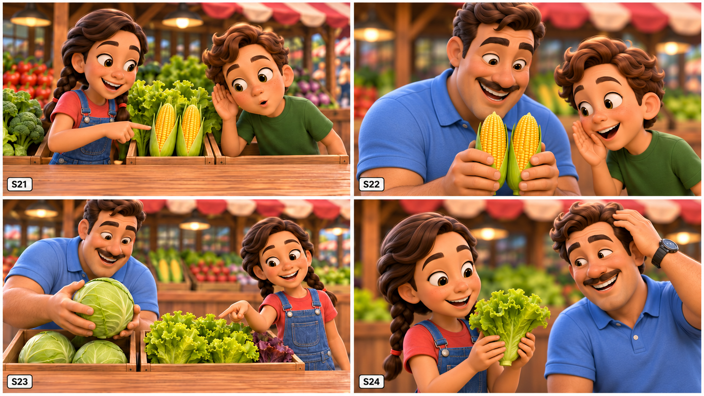
S22 holds two corn ears before lowering; S24 holds one lettuce before deposit. The loaded basket stays outside the crop. These are action beats, not completed basket states.
Read the four shot requirements
S21 · Corn has ears
Ella points to two ears of corn. Max cups a hand by his own ear, then looks at the corn as if it might be listening.
ELLA: We need two ears of corn. MAX: Ears? Can the corn hear us? ELLA: Only if you tell a very corny joke.
Required ending: Two ears identified; no talking vegetables or fantasy transformation.
S22 · Corn has ears
Dan adds two ears of corn along one side of the basket. Max whispers toward them without touching his mouth to the food.
DAN: Two ears of corn for the soup. MAX: Please do not tell the onions about the forest. DAN: Our shopping has secrets now.
Required ending: Two ears of corn added; broccoli and onions still intact.
S23 · Lettuce or cabbage?
Dan holds a firm round cabbage above its crate. Ella indicates the visibly frilly loose-leaf lettuce beside it. No claim that all lettuce varieties have the same shape.
DAN: This lettuce looks like a green bowling ball. ELLA: That one is cabbage. We need the loose-leaf lettuce beside it.
Required ending: Dan returns cabbage to its own crate; selects one loose-leaf lettuce.
S24 · Lettuce or cabbage?
Ella holds up the frilly lettuce and sets it carefully on top of the basket. Dan compares it with his untidy hair in a playful gesture.
ELLA: This lettuce has loose, curly leaves. DAN: So do I on a windy morning. ELLA: Your hair is not on either list.
Required ending: One lettuce on top of basket; cabbage remains at stall.
Static composition study · v02
BOARD 07 S25–S28

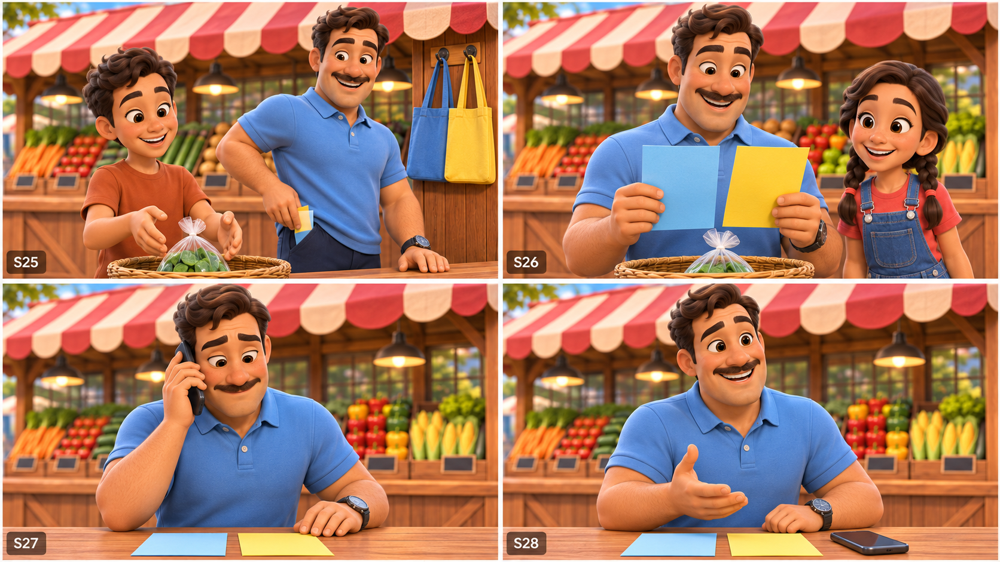
New coverage of spinach, the list reveal and both phone beats. S25 inventory is partly outside the crop. Maya/S27 and Nina/S28 are phone voices only; Dan uses the right ear.
Read the four shot requirements
S25 · The last green thing
Leo finds the final item on Nina's yellow list. Dan reaches for his pocket, finally separating the colored papers. The still-empty totes hang on the counter hook; Ella remains off-screen.
LEO: One bag of spinach. That is the last item. DAN: Wonderful. My basket is full, and my memory is almost full.
Required ending: One bag of spinach placed on top; all ten purchased item types selected.
S26 · The last green thing
The blue and yellow notes open side by side. Dan reads the colored dish headings, realizes the mismatch, and looks down at the basket. Exact headings added in post.
DAN: Wait. Blue says salad. Yellow says soup. ELLA: Your vegetables are correct. Your two dinner plans have changed places.
Required ending: Dan recognizes list-purpose reversal; blue and yellow notes separated in hands.
S27 · A call from home
Dan answers his dark plain smartphone. Maya is heard off-screen from home. Dan looks at the yellow soup list on the counter, still embarrassed by his earlier confusion.
MAYA: How is my salad coming along? DAN: Six potatoes and broccoli. MAYA: That sounds like Nina's soup wearing a salad name tag.
Required ending: Phone at Dan's right ear; lists remain on counter.
S28 · A call from home
Dan asks for clarification. Nina's off-screen voice joins the call from the same home location. He smiles with relief and sets the phone to speaker on the counter.
DAN: Could you repeat that, please? NINA: We need salad and soup, not an argument between potatoes and tomatoes.
Required ending: Phone set face up on counter; call still connected; no readable phone interface required.
Static composition study · v03
BOARD 08 S29–S32

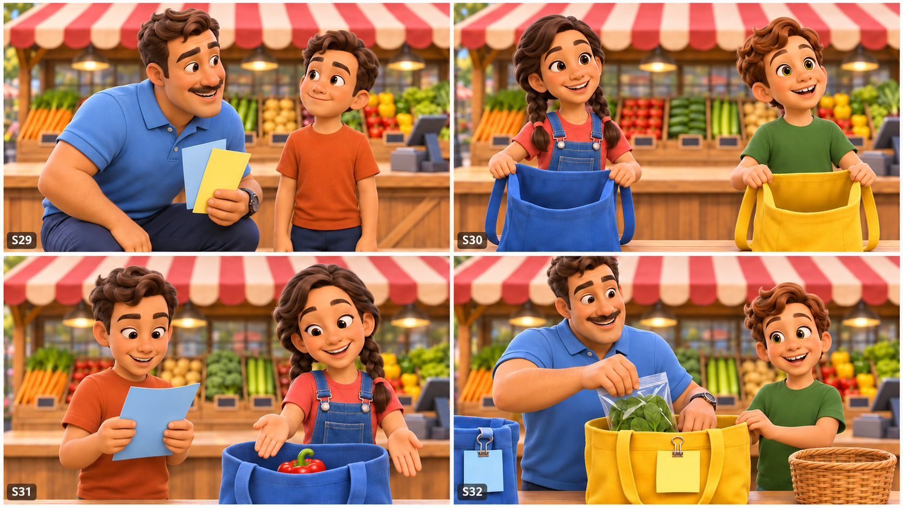
Corrected the misleading empty basket in S30 by keeping it outside the crop; only the totes are empty there. S31 shows sorting in progress. S32 has filled totes and the emptied basket. Watch remains on Dan's anatomical left wrist.
Read the four shot requirements
S29 · Dad tells the truth
Dan ends the call, pockets his phone and admits the error. Leo listens without laughing at him. A short quiet beat gives the emotion room.
DAN: I mixed up the lists. I wanted to get everything right. LEO: You can make a mistake and still be a good dad.
Required ending: Call ended; phone in right pocket; Dan holds lists; emotional tone reassuring.
S30 · Dad tells the truth
Ella holds the blue tote open. Max holds the yellow tote open. They offer a simple sorting plan and smile toward Dan off-screen.
ELLA: We are a team. Let us read one list at a time. MAX: And no vegetable has to argue with another vegetable.
Required ending: Blue and yellow totes open beside basket, ready to sort.
S31 · One team, two bags
Leo reads the blue list. Show the salad items already grouped together beside the open blue tote after a small sorting ellipsis at the cut. Ella places the final red pepper in the tote; the other salad items are already inside. Use the educational insert for the full exact-count inventory.
LEO: Maya's salad: carrots, tomatoes, cucumber, lettuce, and a red bell pepper. ELLA: Blue list, blue bag. Everything matches.
Required ending: Blue tote contains four carrots, three tomatoes, one cucumber, one lettuce, one red pepper.
S32 · One team, two bags
After a second small sorting ellipsis at the cut, the yellow tote already holds potatoes, onions, broccoli and corn. Dan places the final spinach bag inside while Max steadies the tote. The woven basket is empty on the counter. Notes are already clipped to matching handles at this cut.
DAN: Nina's soup: potatoes, onions, broccoli, corn, and spinach. MAX: Yellow list, yellow bag. The forest found its swimming pool!
Required ending: Yellow tote filled correctly; woven basket empty; notes attached to matching tote handles with clips.
Static composition study · v02
BOARD 09 S33–S36

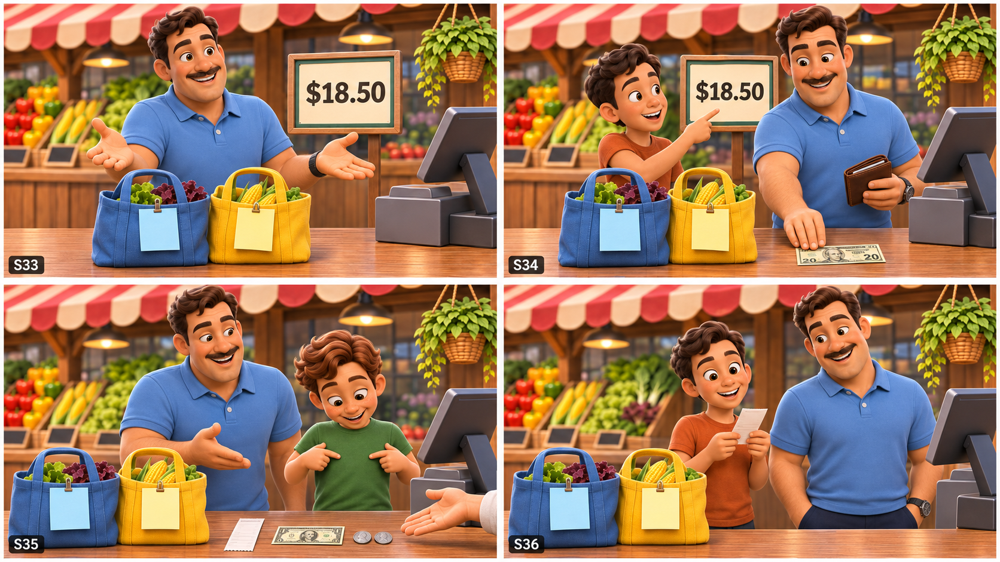
New checkout study. Replace all generated price, receipt and money details with the exact editable overlays: $18.50, $20 and $1.50 change. S36 shows receipt checking before it goes into the wallet.
Read the four shot requirements
S33 · The price of teamwork
Dan sets the blue and yellow totes on the checkout counter. The vendor weighs nothing in this count-priced example; a price graphic lists the scripted total. Dan asks clearly.
DAN: How much is everything? VENDOR: Eighteen dollars and fifty cents. DAN: Good. The teamwork was free, but extremely valuable.
Required ending: Sorted totes on checkout counter; total confirmed as $18.50; no payment yet.
S34 · The price of teamwork
Leo points to the total on a readable editorial price card. Dan takes one twenty-dollar bill from his wallet and places it flat on the counter.
LEO: We have twenty dollars. That is enough. DAN: Here you go. One twenty. I checked the number twice this time.
Required ending: Twenty-dollar payment on counter; wallet in Dan's hand; change not yet given.
S35 · Change does not mean clothes
The vendor gives Dan one dollar and two quarters plus a receipt. Max looks down at his green shirt when he hears change, prompting a gentle joke.
VENDOR: Your change is one dollar and fifty cents. MAX: Change? Do we need new clothes? DAN: This change is money coming back.
Required ending: Receipt, one dollar bill and two quarters received; no extra money appears.
S36 · Change does not mean clothes
Leo checks the receipt. Dan stores it and the change in his wallet, then pockets the wallet. Both notes remain clipped to the matching totes.
LEO: Twenty minus eighteen fifty is one fifty. DAN: The receipt is right, the bags are right, and I am finally right.
Required ending: Receipt and change safely in wallet; payment complete; ready to carry bags home.
Static composition study · v02
BOARD 10 S37–S40

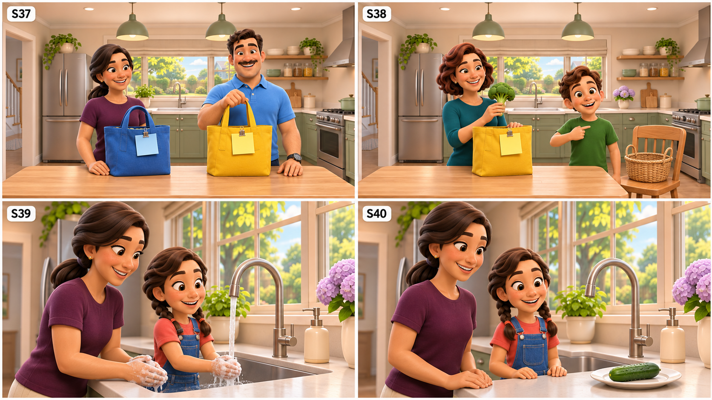
New home handoff and washing studies. Blue goes to Maya, yellow to Nina; the basket on the chair is empty. Preserve fridge-left, window/sink-center and stove-right geography.
Read the four shot requirements
S37 · Home with the right bags
After a simple location cut, Dan places the BLUE tote beside Maya. The matching blue note remains clipped to the handle. He presents it with modest pride.
DAN: Maya, here are your salad vegetables. Blue list, blue bag. MAYA: Perfect. And you remembered to bring our children home, too?
Required ending: Blue tote with Maya; Dan still has yellow tote; receipt and change in wallet.
S38 · Home with the right bags
Max points to himself proudly, then sets the empty basket on a chair. Nina opens the YELLOW tote and lifts the broccoli slightly, smiling.
MAX: All three children. We counted. NINA: And my soup vegetables! Did the broccoli enjoy its trip? MAX: It asked for a window seat.
Required ending: Yellow tote with Nina; basket empty on chair; all purchased food home.
S39 · Wash first
Maya and Ella wash their hands before food preparation. The salad vegetables wait on a clean tray. No knife or hot stove is within the child's reach.
MAYA: First, wash your hands. Then we will wash the vegetables. ELLA: Even the cucumber? MAYA: Especially our well-traveled cucumber.
Required ending: Hands washed; salad vegetables moved to clean tray beside sink.
S40 · Wash first
Ella gently rubs the cucumber under running water with Maya beside her. She sets it on a clean plate; water turns off at the end.
ELLA: Wash the cucumber. Put it on the clean plate. MAYA: Exactly. You are giving clear instructions. ELLA: My cucumber understands English now.
Required ending: Cucumber rinsed and on clean plate; faucet off; other produce prepared by adults off-screen.
Static composition study · v03
BOARD 11 S41–S44

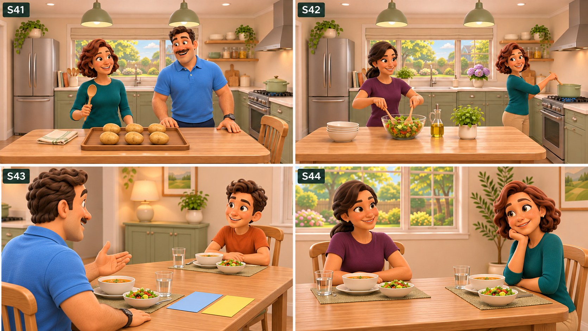
Replaced chopped/mismatched ingredients with six whole potatoes in S41 and improved dining compositions. S42 requires an editorial cooking-time ellipsis. Dining close-ups are approximate: use the exact seating diagram to derive production camera positions.
Read the four shot requirements
S41 · Ingredients are not dinner yet
Nina holds a wooden spoon while Dan begins to relax in a chair. She gestures toward the unprepared ingredients and he immediately stands to help.
DAN: Shopping finished. Dinner finished! NINA: You brought the ingredients, Dan. They have not learned to cook themselves. DAN: That is tomorrow's English lesson.
Required ending: Dan ready to help; adult-only hot cooking area established.
S42 · Ingredients are not dinner yet
A gentle editorial time ellipsis reveals chopped vegetables prepared by adults. Maya tosses salad with utensils; Nina stirs the soup pot. Children are outside the hot cooking area.
MAYA: First, we prepare the vegetables. Then we make the salad. NINA: And I cook the soup. Two dishes, one happy kitchen.
Required ending: Later: salad mixed, soup cooked; no raw-potato eating; time passage indicated by light clock dissolve in edit.
S43 · A small mistake, a good lesson
The meal is served after the cooking time ellipsis. Dan takes a small spoonful, sets the spoon down and speaks sincerely to Leo.
DAN: I felt embarrassed because I mixed up the lists. LEO: We helped because we love you. You help us learn every day.
Required ending: Dan relaxed; Leo reassuring; blue and yellow notes rest flat at table edge.
S44 · A small mistake, a good lesson
Maya and Nina exchange an affectionate amused glance. Maya gestures toward the two dishes, and Nina gives Dan a friendly nod off camera.
MAYA: You listened, asked questions, and tried again. NINA: That is a good recipe for learning. Even without forty carrots.
Required ending: Emotional resolution: both wives appreciate Dan's effort and the children's teamwork.
Static composition study · v02
BOARD 12 S45–S48

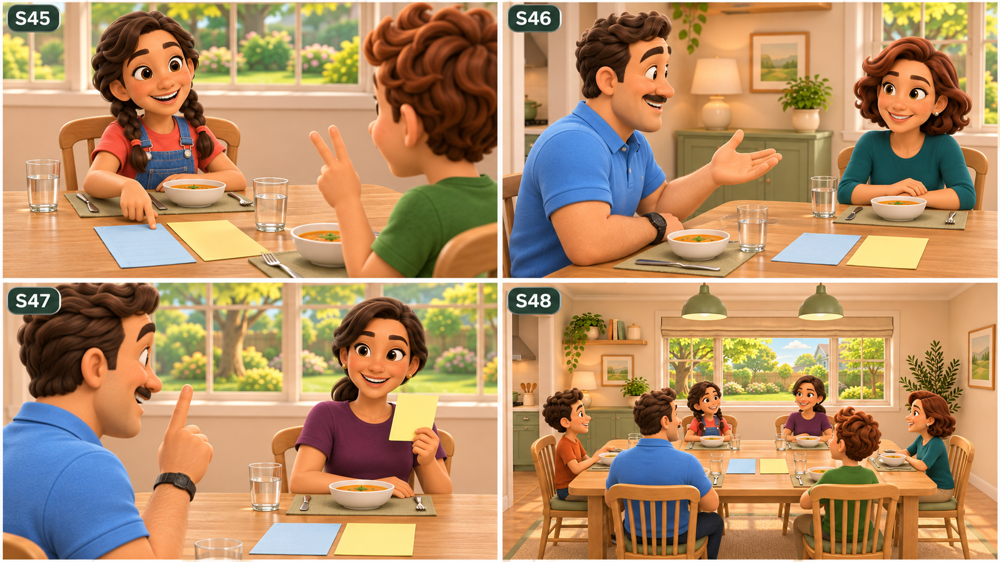
New closing conversation and six-person wide. Use the seating diagram and full salad/soup meal specification when staging the final shots; cropped dishes in these studies are not a complete food inventory. Keep the picnic card blank until editorial text is added.
Read the four shot requirements
S45 · The family's new rule
Ella points to the blue and yellow notes now side by side on the table. Max counts two lessons on his fingers, keeping hands away from shared food.
ELLA: If you are unsure, ask. MAX: And if a vegetable has ears, speak politely. ELLA: That second rule is optional.
Required ending: Children smiling; learning principle stated without a lecture.
S46 · The family's new rule
Dan pretends to consult a tiny invisible rulebook, then points kindly to the real lists. Nina answers with a smile, not a scolding tone.
DAN: I will ask when I am unsure. Could you check this with me? NINA: Of course. Asking for help is always welcome here.
Required ending: Dan commits to checking; Nina agrees; family remains cooperative.
S47 · Tomorrow: the fruit shop
Maya mentions tomorrow's picnic fruit. Dan pauses dramatically, then lifts one finger. Nina laughs softly off-screen without extra dialogue.
MAYA: Tomorrow, we need fruit for a picnic. DAN: One list, please. MAYA: One list. Two colors. DAN: And three excellent helpers.
Required ending: Next-episode premise introduced; no unresolved purchase needed for Episode 1.
S48 · Tomorrow: the fruit shop
All six enjoy the meal around the table in the fixed seating plan. Dan's voice is off-screen narration over quiet smiles, eliminating six-mouth lip-sync. The shot closes on the two correctly labeled lists beside the dishes.
DAN: Today we brought home vegetables, new words, and a better plan. One family, one team. See you at the fruit shop!
Required ending: Story fully resolved before final recap; final frame holds for transition.